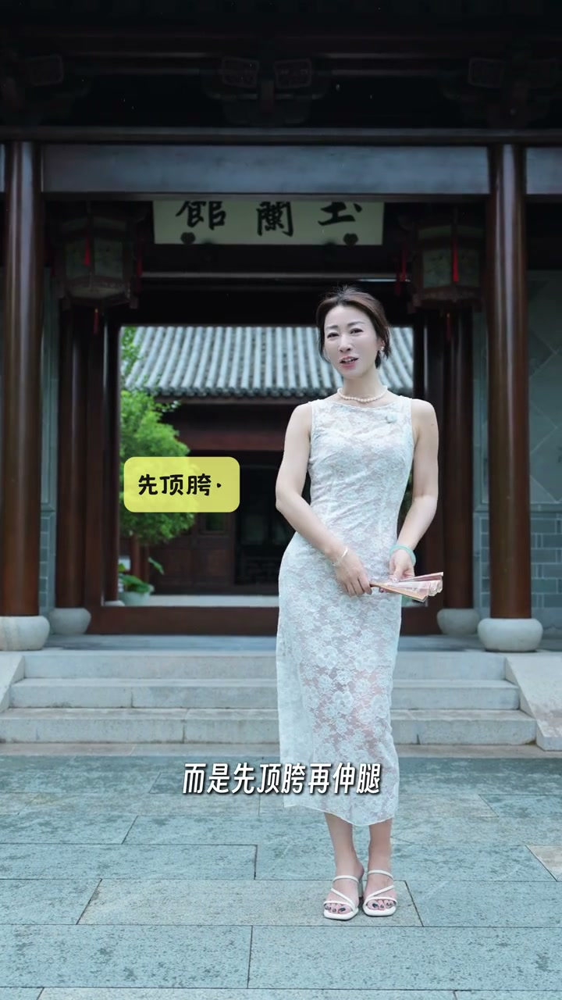
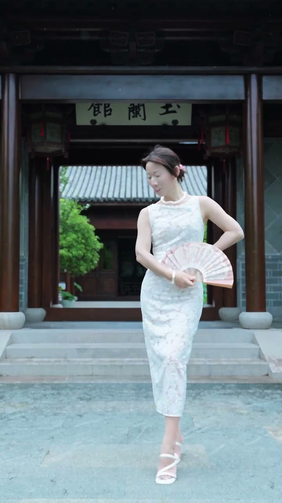
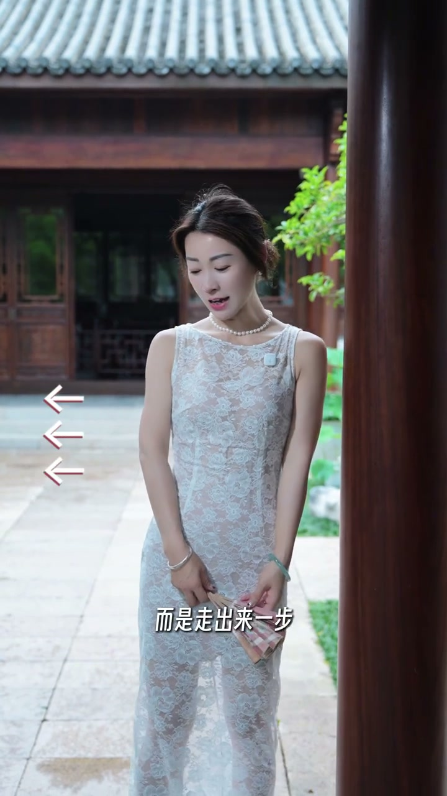
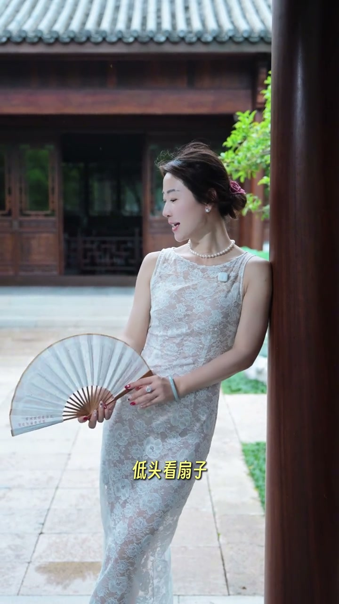
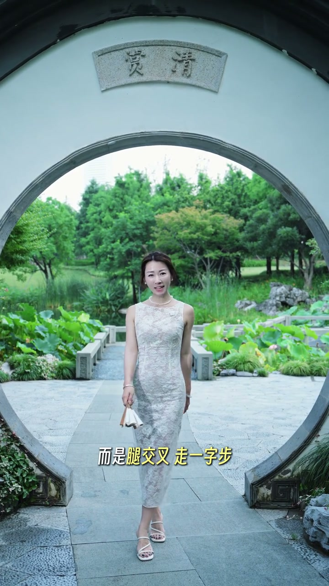

全身照：先顶胯再伸腿
00:00全身照不是这样拍——而是先顶胯、再伸腿、手插腰、歪头，摆出错落有层次的曲线。


靠柱子：用肩膀去靠
00:06柱子不是直接靠在上面拍，而是走出来一步，用肩膀去靠。
00:10重心放在右胯，歪头——随意的倚靠感，不僵硬。

歪头：脑袋倒向镜头
00:14歪头不是把脸冲向镜头——那样显脸方。
00:16而是反过来，用脑袋倒向镜头、下巴向前伸——脸型更瘦、更上镜。

走路：交叉之字步
00:21走路不是这样直直地往前走，而是腿交叉走之字步。
00:25可以抬头、歪头——动感又自然的抓拍感。

新手出片的关键不是复杂的动作，而是四个细节：顶胯曲线、肩膀靠柱、歪头角度、交叉步伐——动起来才自然。